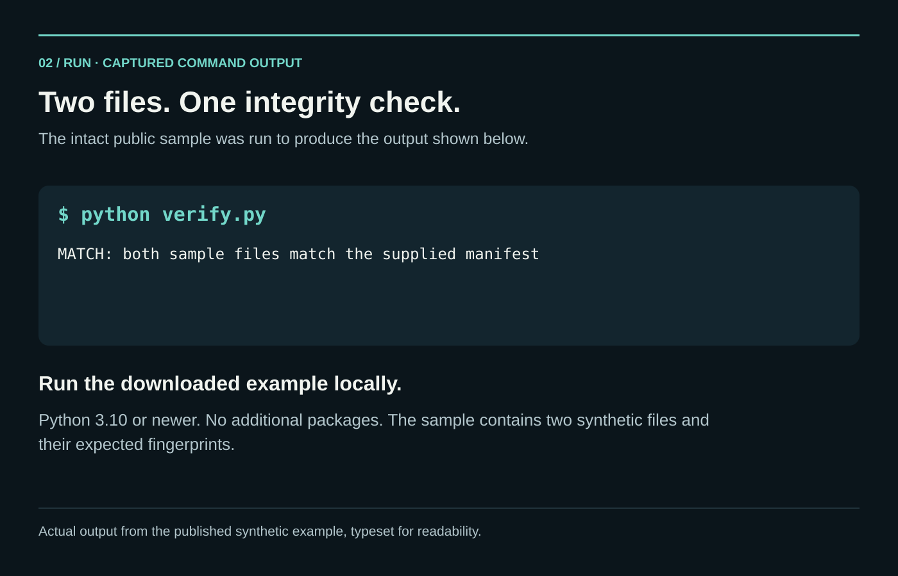

Frame the question
InputResearch brief
ProcessQuestion + scope + evidence
OutputProject design
Research Architect captures scope, questions, evidence needs, outputs, and review responsibilities.
I built Research Architect to give each member of a human research team a configured AI assistant kit. The kits share methods, project context, review steps, and structured handoffs so individual work can contribute to one coordinated study.
Created by Brandon Santor under PhalAInx, my independent software studio.
Project at a glance ↓


Research Architect is my framework for building AI-assisted research systems for human teams. It converts a reviewed project design into an individual assistant kit for each participant. Every kit identifies its human operator, assigned workstream, methods, dependencies, and first action; the team then works through a shared system with review and handoffs.
The Hub coordinates shared work and reviewed releases; Spokes are the individual assistants configured for assigned research; the Ingestor organizes incoming evidence and runs file checks. My Python generator builds these role kits and their working folders. A small HTML interface lets people inspect incoming files, revisions, receipts, and review history.
A technical white paper and comparative literature review document the design. I reviewed thousands of research and technical sources and turned them into workflow instructions for citing evidence, comparing methods, surfacing conflicting findings, preserving uncertainty, and keeping a human reviewer responsible for decisions. This shaped the research process; it did not retrain the underlying AI models. The public literature review lists 25 cited entries; the broader source review informed the framework’s instructions and methods.
Part of that foundation comes from FAIR data principles, source provenance, digital-repository guidance, and research on AI coordination and scientific methods. The current package supplies 41 method routes, 12 specialist chapters, and 27 locally available reference texts. Selected kits receive the guidance relevant to their work, with source identities and reuse rights recorded. The white paper explains both this knowledge expansion and the operational NWSW deployment.
Updated illustrated white paper · October 23, 2026 · Fourteen pages · RA 2.4 revision 2, scientific library 1.5, and the deployed RA 2.3 Hub improvements. Inspect the current package evidence ↗
The October 23 development preview brings the pilot’s engineering improvements into newly generated Hub, Spoke, and Ingestor kits. A local Doctor interface runs scoped diagnostics and retains reports, with a recovery entry point when the agent cannot start. These routine checks do not require model calls.
Saved operation records distinguish finished work, failed work, and work whose outcome is still unknown after an interruption. Updates check the installed version before changing it and keep a recovery history; migration from retained RA 2.1 examples was tested. Human decisions also persist, so an old import cannot silently reopen work already closed.
The Library client finds exact file versions, dependencies, and corrections, and supports reviewed submissions. Routine message checks can run without reloading the entire research history. If a result list is incomplete, the interface says so. Thirty shared research rules and seven research-practice instructions remain part of the framework; RA 2.4 expands the method-specific guidance described below.
I used Research Architect to generate the New World Screwworm coordination system, configured its deployment, and supported onboarding eight people. Versioned file lists, fingerprints, and separate approval, delivery, and acknowledgement records keep work traceable. The Spatial Evidence Workbench is my separate GIS application.
Contributor packages list expected files and SHA-256 fingerprints to detect missing or changed contents. Version checks identify outdated starting checkpoints. Partial work is written separately, and the published copy is checked before it can replace the current version. Review, delivery, and acknowledgement records distinguish what was approved, sent, and received.
The framework is operational in NWSW. Its RA 2.3 selective Hub/Library improvements are installed and tested. RA 2.4 revision 2 is a separate tested package for future kits; it has not replaced that customized live installation. Existing approvals and closed work orders remain intact. See the deployed improvement and its checks →
The review loop records findings, corrections, superseded assumptions, and unresolved questions. After human acceptance, authorized material is registered and published with exact versions, dependencies, and use limits. Participants retrieve relevant records for subsequent work; delivery and retrieval remain distinct from actually applying a correction.
The system locates the designated current checkpoint and restores the required source context. RA 2.3 can reference exact duplicate material, reconstruct complete selected sources, and reuse retained context explicitly in the same conversation. Fresh or uncertain context is reconstructed; a disk check alone does not prove an AI assistant read it.
Backup tools compare copies with originals and test restoration in isolation. An October 16, 2026 inventory recorded 262 package transfers in the deployed Hub: 98 incoming and 164 outgoing. These are handoff records; dispatch receipts separately establish completed delivery. They do not count people or completed AI tasks.
Research Architect is one of two PhalAInx products. See the studio and its products → High Command is a separate application for an individual coordinating multiple models.
RA 2.4 revision 2 expands the research guidance delivered with new role kits. A team can select from 41 method routes and retrieve the relevant specialist chapters and original-source references. Multi-agent chapters cover role design, fair comparisons, failure recovery, and scientific reproduction. Statistics chapters address repeated measurements, missing data, uncertainty, causal questions, surveys, and model checks.
The compiler includes the selected guidance and its source dependencies. Long chapters and reference texts stay outside routine startup; a local reader retrieves them in complete, size-limited parts tied to the same source fingerprint. This makes deeper material available when needed without loading every reference into every session.
In the earlier RA 2.3 test containing repeated research context, RA reduced the text sent to the assistant from about 773,000 characters to 119,000, while retaining the complete original material for reconstruction. When the same context was explicitly reused, only a 277-character reference was needed. This demonstrates less repeated text in that test; it does not measure provider billing or token savings.
Seven focused checks covered new guidance, source dependencies, export compatibility, revision-change detection, complete chapter retrieval, and worked-example arithmetic. The delivered ZIP contains 419 members; all 418 content pins were verified. Kits generated for the Hub, Spoke, and Ingestor passed the Doctor consistency check. These tests used local data and no model or network calls. They establish package behavior, not improved scientific outcomes; unchanged operational suites were not rerun.
Read the RA 2.4 verification summary ↗ · Earlier RA 2.3 measurements ↗
Recorded checks cover kit generation, saved state, file exchange, and recovery. The results below concern software behavior and file preservation; human review still determines scientific use.
The updated white paper explains these dated operational results, the deployed Hub improvements, and the RA 2.4 knowledge expansion. Read the white paper in a new tab ↗
A handoff can look complete even when a file has changed. This small Python example compares two synthetic notes with a manifest of expected filenames and SHA-256 fingerprints, then demonstrates changed, missing, and unexpected files.
Created for this portfolio to make the method inspectable. It is a standalone demonstration, not a release of the RA runtime. A match establishes byte agreement with the supplied manifest; authorship, scientific validity, and approval require separate evidence.
handoff-integrity folder. Python 3.10 or newer is the only requirement.python verify.py. The intact example reports that both files match the manifest.python verify.py --self-test. Five checks exercise intact, changed, missing, unexpected, and malformed inputs using temporary copies.This is the same function included in the download. The full script also checks the manifest structure and expected file list.
def inspect_file(path: Path, expected_hash: str) -> str:
if path.is_symlink():
return "REJECTED LINK"
if not path.is_file():
return "MISSING"
digest = sha256()
with path.open("rb") as stream:
for block in iter(lambda: stream.read(1024 * 1024), b""):
digest.update(block)
return "MATCH" if digest.hexdigest() == expected_hash else "CHANGED"Keep an expected manifest from a trusted handoff. Replacing both a file and its manifest can produce a new matching pair. Read the scope and instructions ↗
Explore each stage of the work.
Research Architect captures scope, questions, evidence needs, outputs, and review responsibilities.
Configure each participant’s AI assistant with its research role, methods, source context, dependencies, and handoff responsibilities.
Source expectations, contrary evidence, gaps, and human review gates shape the synthesis.
Load the current saved project state, check the expected files and their SHA-256 fingerprints, publish the reviewed update, and keep a recovery copy.